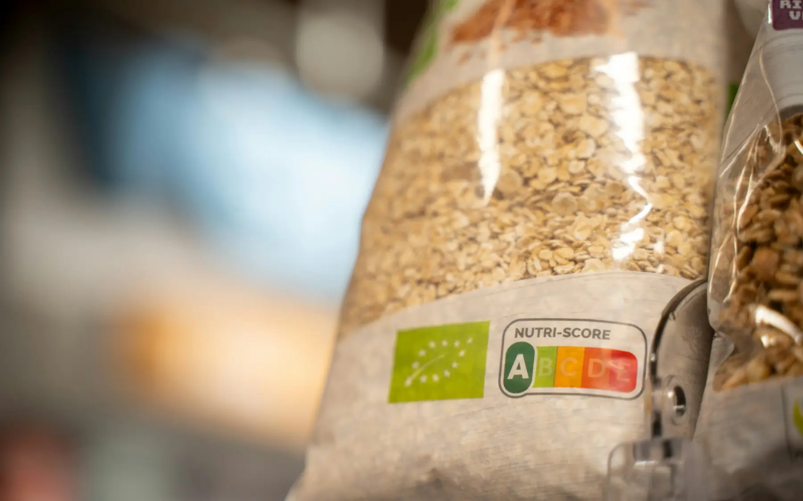

Market rafında etiket okuma rehberiA guide to reading food labels in the supermarket
Paketin ön yüzündeki “doğal”, “light” ya da “protein kaynağı” yazıları dikkat çekmek için var. Asıl bilgi paketin arkasında.Words like “natural”, “light” or “source of protein” on the front of the pack are there to catch your eye. The real information is on the back.

1. İçindekiler listesine bakın
Türk Gıda Kodeksi’ne göre bileşenler, ürüne eklenme miktarına göre çoktan aza sıralanır. İlk üç bileşen ürünün büyük kısmını oluşturur. “Tam buğdaylı” bir bisküvinin ilk sırasında buğday unu yazıyorsa, tam buğday unu ikinci ya da üçüncü sırada kalmış demektir.
Genel bir kural: Liste ne kadar kısa ve tanıdık bileşenlerden oluşuyorsa, ürün o kadar az işlenmiştir.
2. Porsiyon tuzağına düşmeyin
Besin değerleri 100 g veya 100 ml için verilir; bazı ürünler ayrıca porsiyon değeri de gösterir. Porsiyon çoğu zaman gerçekçi olmayacak kadar küçüktür: bir paket cipsin porsiyonu 30 g yazabilir ama paketin kendisi 110 g’dır. Ürünleri karşılaştırırken daima 100 g değerlerini kullanın.
3. Şekerin farklı adlarını tanıyın
Bir ürün “şeker” yazmadan da tatlandırılmış olabilir. Şu ifadeler eklenmiş şeker anlamına gelir:
- Glukoz şurubu, glukoz-fruktoz şurubu, mısır şurubu
- Fruktoz, dekstroz, maltoz, sakaroz
- Maltodekstrin
- Bal, pekmez, agave şurubu, hurma şurubu
- Konsantre meyve suyu
Besin değerleri tablosundaki “şekerler” satırı meyve ve sütten doğal olarak gelen şekeri de kapsar. Yine de 100 g’da 22,5 g’ın üzeri yüksek, 5 g ve altı düşük kabul edilir.
4. Tuz ve yağ için hızlı ölçüler
| 100 g’da | Düşük | Yüksek |
|---|---|---|
| Toplam yağ | ≤ 3 g | > 17,5 g |
| Doymuş yağ | ≤ 1,5 g | > 5 g |
| Şekerler | ≤ 5 g | > 22,5 g |
| Tuz | ≤ 0,3 g | > 1,5 g |
Bu eşikler Birleşik Krallık’ta kullanılan trafik ışığı sistemine dayanır ve hızlı karşılaştırma için pratik bir referanstır. İçindekilerde “kısmen hidrojenize yağ” görürseniz ürünü rafa geri koyun; trans yağ içerebilir.
5. Beyanları doğru okuyun
- “Light” / “azaltılmış”: benzer ürüne göre ilgili besin öğesinde en az %30 azalma demektir; kalorisi düşük olmayabilir.
- “Lif kaynağı”: 100 g’da en az 3 g lif. “Yüksek lif”: en az 6 g.
- “Protein kaynağı”: enerjinin en az %12’si proteinden gelir.
- “Şeker ilavesiz”: eklenmiş şeker yoktur ama meyveden gelen doğal şeker olabilir.
- “Doğal”, “ev yapımı”, “köy usulü” gibi ifadelerin beslenme değeri açısından bir anlamı yoktur.
Bilgi
Bazı ithal ürünlerde gördüğünüz Nutri-Score (A–E) etiketi Türkiye’de zorunlu değildir. Aynı kategorideki ürünleri karşılaştırmak için yardımcı olabilir, ama farklı ürün gruplarını kıyaslamak için tasarlanmamıştır.
Market için mini kontrol listesi
- Ön yüzü değil, arka yüzü okuyun.
- İlk üç bileşene bakın.
- 100 g değerlerini karşılaştırın.
- Şekerin farklı adlarını arayın.
- Tuz 100 g’da 1,5 g’ın üzerindeyse ölçülü tüketin.
1. Read the ingredient list
Under the Turkish Food Codex, ingredients are listed in descending order by the amount used. The first three make up most of the product. If a “wholegrain” biscuit lists wheat flour first, the wholewheat flour has ended up second or third.
A general rule: the shorter the list, and the more familiar the ingredients, the less processed the product.
2. Don’t fall into the portion trap
Nutrition values are given per 100 g or 100 ml; some products also show a per-portion figure. Portions are often unrealistically small: a bag of crisps might list a 30 g portion while the bag holds 110 g. Always compare products using the per-100 g values.
3. Learn sugar’s other names
A product can be sweetened without “sugar” appearing on the label. All of these mean added sugar:
- Glucose syrup, glucose-fructose syrup, corn syrup
- Fructose, dextrose, maltose, sucrose
- Maltodextrin
- Honey, grape molasses, agave syrup, date syrup
- Concentrated fruit juice
The “sugars” line in the nutrition table also includes sugar that occurs naturally in fruit and milk. Even so, more than 22.5 g per 100 g counts as high and 5 g or less as low.
4. Quick guide to salt and fat
| Per 100 g | Low | High |
|---|---|---|
| Total fat | ≤ 3 g | > 17.5 g |
| Saturated fat | ≤ 1.5 g | > 5 g |
| Sugars | ≤ 5 g | > 22.5 g |
| Salt | ≤ 0.3 g | > 1.5 g |
These thresholds come from the UK traffic-light system and make a handy reference for quick comparisons. If you see “partially hydrogenated oil” in the ingredients, put the product back; it may contain trans fat.
5. Read claims correctly
- “Light” / “reduced”: at least 30% less of that nutrient than a similar product; it may still be high in calories.
- “Source of fibre”: at least 3 g of fibre per 100 g. “High fibre”: at least 6 g.
- “Source of protein”: at least 12% of energy comes from protein.
- “No added sugar”: no sugar was added, but there may be natural sugar from fruit.
- “Natural”, “homemade”, “village-style” say nothing about nutritional value.
Good to know
The Nutri-Score (A–E) label you may see on imported products is not mandatory in Türkiye. It helps compare products within the same category but isn’t designed to compare different kinds of food.
A mini checklist for the shop
- Read the back, not the front.
- Look at the first three ingredients.
- Compare per-100 g values.
- Look for sugar’s other names.
- If salt is above 1.5 g per 100 g, keep it occasional.
Kaynaklar
- Türk Gıda Kodeksi Gıda Etiketleme ve Tüketicileri Bilgilendirme Yönetmeliği. Resmî Gazete, 26 Ocak 2017, Sayı 29960.
- Türk Gıda Kodeksi Beslenme ve Sağlık Beyanları Yönetmeliği. Resmî Gazete, 26 Ocak 2017, Sayı 29960.
- Regulation (EC) No 1924/2006 of the European Parliament and of the Council on nutrition and health claims made on foods.
- Department of Health (UK). Guide to creating a front of pack (FoP) nutrition label for pre-packed products sold through retail outlets. 2016.